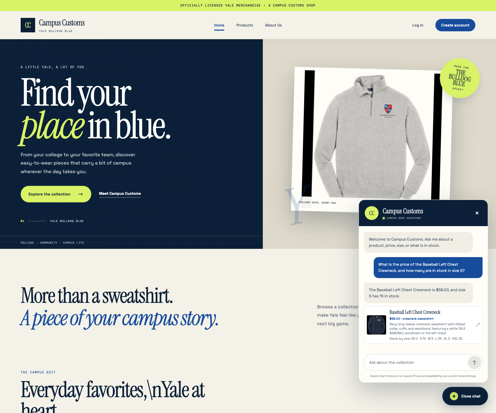
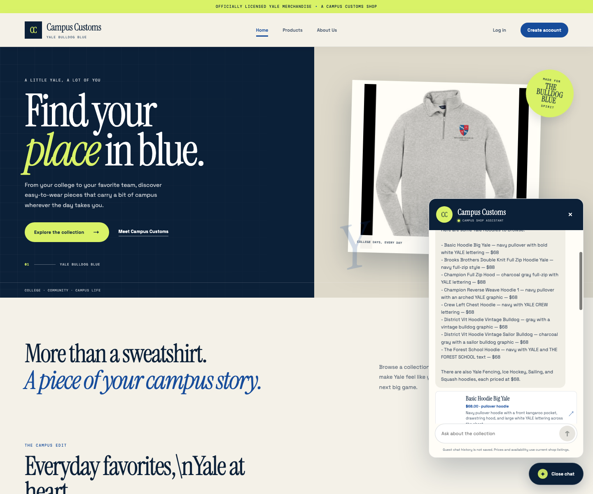
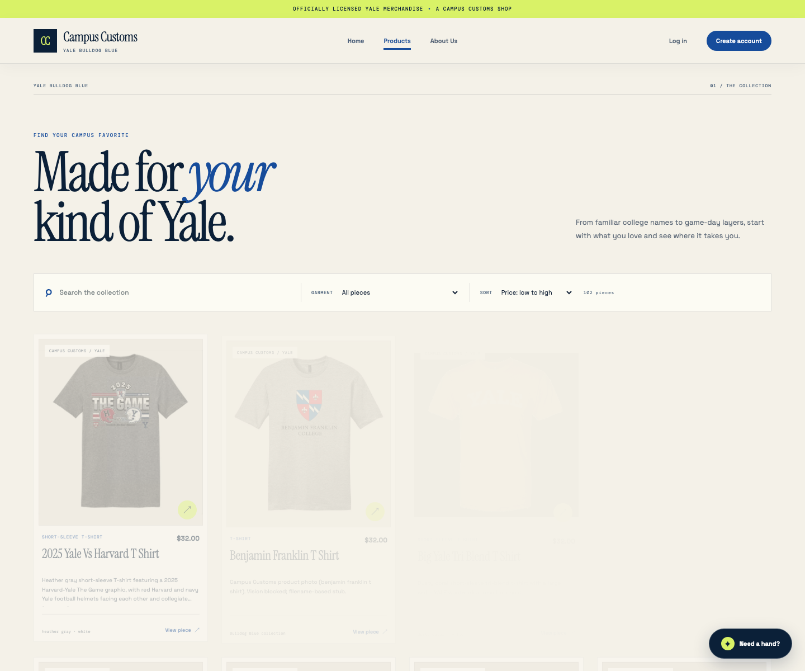

These screenshots were captured from the packaged React site running against its FastAPI backend and local SQLite catalogue. The chatbot checks used live PydanticAI responses; product facts and stock were read from the database.
1. Product price and size stock
Live chatbot answer: “The Baseball Left Chest Crewneck is $58.00, and size S has 15 in stock.”
The response matches the catalogue price and the size S quantity returned by SQLite. It demonstrates that a shopper can ask one question about both price and stock and receive the checked values.

Guest chat answer captured from the running shop.
2. Hoodie recommendations and product cards
Live result: “Find hoodies” returned eight structured product cards, including Basic Hoodie Big Yale ($68.00), Brooks Brothers Double Knit Full Zip Hoodie Yale ($88.00), and Champion Full Zip Hood ($88.00).
The cards show catalogue-backed names, prices, images, and links to product details beside the agent's reply, making category discovery actionable.

Eight matching hoodie cards returned by the live chatbot.
3. Problem 9 improvement: product sorting
Selected sort: Price, low to high. The first catalogue item is 2025 Yale Vs Harvard T Shirt ($32.00).
The Products page sorts the 102 real catalogue records by price, helping shoppers compare lower-priced items first. The screenshot shows the active sort control and the reordered product grid.

Products page with the low-to-high price sort selected.
Images are stored next to this report and use relative paths so the page can be opened directly in a browser after cloning.